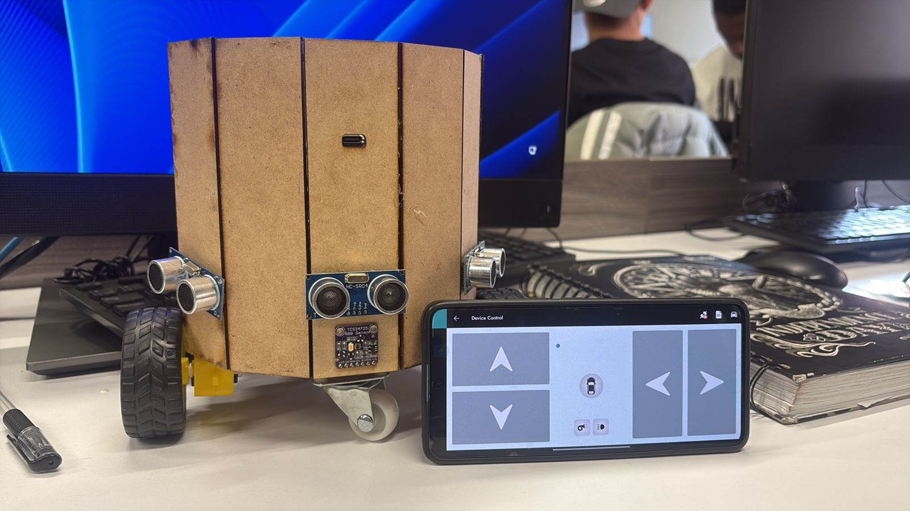
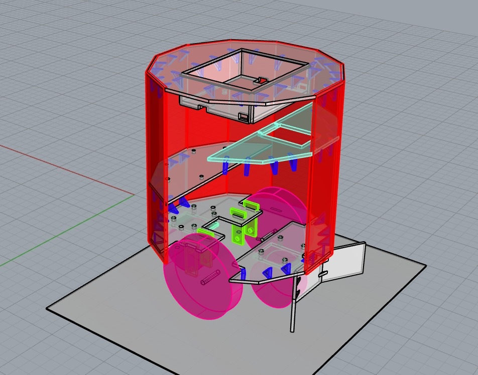

🤖 El robot


📋 Descripción general
Este proyecto desarrolla un agente robótico capaz de desplazarse y ejecutar acciones de fútbol (patear/recuperar un balón) en distintas superficies. Fue diseñado, construido y evaluado como parte de un informe experimental en la Universidad Sergio Arboleda.
La estructura física fue construida en MDF con diseño cilíndrico. El sistema electrónico se basa en un ESP32 que recibe comandos de movimiento por Bluetooth clásico desde una app móvil. Tres sensores ultrasónicos HC-SR04 detectan obstáculos en el frente y los laterales, mientras que un sensor de color TCS34725 permite identificar el balón.
⚡ Componentes electrónicos
💻 Lógica de control (Arduino)
El firmware corre sobre ESP32 con la librería BluetoothSerial. El loop principal escucha caracteres Bluetooth y despacha las funciones de movimiento correspondientes:
F / fAdelanteAIN2↑ BIN2↑ PWM=200B / bAtrásAIN1↑ BIN1↑ PWM=200L / lIzquierdaAIN1↑ BIN2↑R / rDerechaAIN2↑ BIN1↑S / sPararPWM=0VELOCIDAD = 200 (rango 0–255 PWM). El pin STBY = HIGH mantiene activo el driver TB6612FNG en todo momento.
📊 Análisis estadístico de rendimiento
El informe experimental evaluó el robot en 5 superficies distintas para dos tareas: desplazamiento y acción de fútbol. Se aplicaron métodos estadísticos avanzados para modelar el rendimiento:
Simulación Monte Carlo
100 muestras por escenario generadas con coeficientes de variación asumidos. Se estimaron medias, desviaciones estándar e intervalos de confianza al 95%.
Distribución Binomial
Modelado de éxito de tareas con distribuciones de Bernoulli/Binomial para estimar probabilidades de éxito por superficie.
Teorema de Bayes
Cálculo de probabilidades condicionales: probabilidad de éxito de una jugada dado que el robot recuperó el balón previamente.
Distribución de Poisson
Estimación de la tasa de recuperaciones por minuto de partido. Modelado de eventos discretos en tiempo continuo.